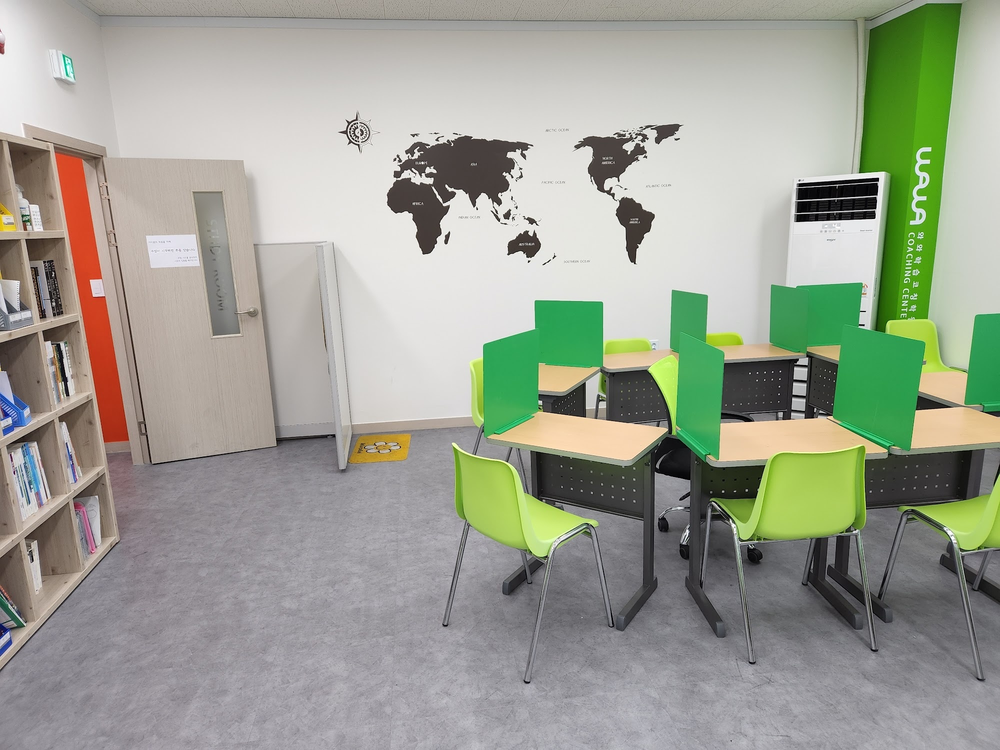
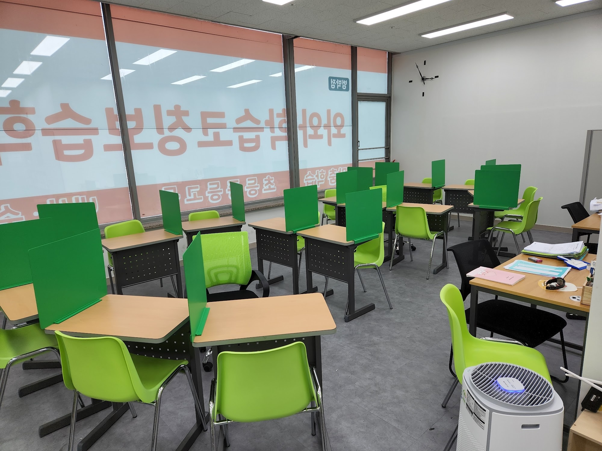

안녕하세요, 경기 부천시 소사구 소사본동 은성로에 있는 와와학습코칭 범박점입니다. 범박초등학교(범박초)·소일초등학교(소일초)·창영초등학교(창영초) 아이들이 자라서 부천일신중학교(일신중)·소사중학교(소사중)·부일중학교(부일중)로 가고, 다시 소사고등학교(소사고)·범박고등학교(범박고)·시온고등학교(시온고)로 이어지는 동네입니다.
위 사진은 저희 학습실입니다. 벽 한가운데에 세계지도가 붙어 있습니다. 인테리어로 붙인 것은 맞습니다. 그런데 이 지도 앞에서 아이들과 나누는 대화가 은근히 많습니다. 오늘은 그 이야기를 해 보려 합니다. 사회와 역사가 왜 그렇게 많은 아이들에게 ‘끝없이 외우는 과목’이 되어 버리는지에 관한 이야기입니다.
“사회는 그냥 외우면 되는 거 아니에요?”
중학생 아이들에게 가장 자주 듣는 말입니다. 그리고 이 말이 나온 순간부터 성적이 잘 오르지 않습니다.
왜냐하면 외우는 양이 감당할 수 있는 수준을 금방 넘어가기 때문입니다. 중학교 사회 한 단원에 나오는 지명, 국가, 기후, 산업, 제도를 전부 개별 항목으로 외우면 한 단원이 100개짜리 목록이 됩니다. 시험 직전에 벼락치기로 밀어 넣으면 그날은 됩니다. 문제는 다음 단원에서 또 100개가 온다는 것입니다.
그래서 사회·역사는 학년이 올라갈수록 점수가 떨어지는 대표적인 과목이 됩니다. 실력이 줄어서가 아니라 방식이 버티지 못해서입니다.
지도 앞에서 한 번 짚고 시작하면 달라지는 것
저희가 하는 건 거창하지 않습니다. 단원에 나온 곳을 지도에서 손가락으로 한 번 짚게 합니다.
이게 왜 효과가 있냐면, 낱개로 흩어져 있던 정보가 한 자리에 묶이기 때문입니다.
- 적도 근처라는 걸 알면 덥고 비가 많다는 게 따라옵니다. 기후를 따로 외울 필요가 줄어듭니다.
- 바다에 접해 있다는 걸 보면 무역·항구·수산업이 왜 발달했는지가 자연스럽습니다.
- 두 나라가 붙어 있다는 걸 보면 왜 자주 싸웠는지가 설명이 됩니다.
외울 항목 다섯 개가 ‘위치 하나 + 따라오는 것들’로 바뀝니다. 아이가 외워야 할 양이 실제로 줄어듭니다.
역사도 같습니다. 역사에서 아이들이 가장 힘들어하는 건 연도가 아니라 순서와 인과입니다. 무슨 일이 먼저 일어났고 그래서 그다음에 무엇이 일어났는지. 이게 잡히면 연도는 몇 개만 알아도 나머지가 제자리를 찾아갑니다. 반대로 순서가 없으면 연도를 다 외워도 시험지에서 섞입니다.
중학교 사회가 어려워지는 진짜 지점

초등 사회와 중등 사회의 차이를 한 줄로 말씀드리면 이렇습니다. 초등은 ‘무엇인지’를 묻고, 중등은 ‘왜 그런지’를 묻습니다.
그래서 서술형 문항이 이렇게 나옵니다.
- 이 지역에 그 산업이 발달한 이유를 자연환경과 연결해 서술하시오.
- 두 제도의 차이를 배경을 들어 비교하시오.
- 이 사건이 이후에 미친 영향을 한 가지 이상 쓰시오.
교과서를 아무리 여러 번 읽어도 이런 문제에서 막히는 아이가 많습니다. 읽기는 했는데 연결해 본 적이 없기 때문입니다. 그래서 저희 수업에서는 단원이 끝날 때 문제를 더 푸는 대신 이렇게 시킵니다. “이 단원을 세 문장으로 설명해 볼래?” 세 문장으로 못 줄이면 아직 외우기만 한 상태입니다.
고등에서 이 습관이 어디로 이어지나
이 동네 아이들은 대체로 소사고등학교·범박고등학교·시온고등학교로 진학합니다. 고등학교에 가면 사회 계열 과목의 성격이 또 한 번 바뀝니다.
분량이 늘어나는 것도 맞지만, 더 큰 변화는 자료를 해석하라고 요구한다는 점입니다. 그래프, 표, 지도, 사료 한 토막을 주고 여기서 무엇을 읽어 낼 수 있는지 묻습니다. 외운 지식을 그대로 적는 문항은 줄어듭니다.
중학교 때 ‘연결하는 연습’을 해 본 아이와 그렇지 않은 아이가 여기서 갈립니다. 전자는 자료를 보고 아는 것과 이어 붙일 줄 압니다. 후자는 자료가 나오는 순간 처음 보는 문제가 됩니다. 같은 내용을 배웠는데 결과가 다른 이유입니다.
그래서 저희는 중등 시기에 문제집 권수를 늘리자는 말씀을 잘 드리지 않습니다. 지금 필요한 건 양이 아니라 방식인 경우가 훨씬 많습니다.
암기 과목에서 아이들이 흔히 하는 세 가지 착각
상담에서 아이들 이야기를 들어 보면 거의 비슷하게 반복되는 것이 있습니다.
- “형광펜을 칠했으니 공부했다” — 칠하는 동안은 머리가 거의 쉬고 있습니다. 칠한 다음 책을 덮고 말해 보는 데서 공부가 시작됩니다.
- “여러 번 읽으면 외워진다” — 읽을수록 글이 익숙해져서 아는 것 같은 느낌만 늘어납니다. 느낌과 인출은 다릅니다.
- “사회는 시험 전날 하면 된다” — 단답형만 있을 때는 통했습니다. 서술형에서는 통하지 않습니다. 전날에 몰아서 한 지식은 문장으로 나오지 않습니다.
세 가지 모두 아이가 게을러서 생기는 일이 아닙니다. 그렇게 해도 됐던 시기가 실제로 있었기 때문에 생깁니다. 방법을 바꿔야 하는 시점이 왔는데 아무도 알려 주지 않았을 뿐입니다.
상담 오시면 먼저 여쭙는 것
부모님들께서는 대개 “사회 점수가 안 나온다”로 이야기를 시작하십니다. 저희가 그다음에 여쭙는 건 점수가 아니라 이런 것들입니다.
- “틀린 문제가 주로 단답형인가요, 서술형인가요?” — 단답형에서 틀리면 암기량 문제이고, 서술형에서만 틀리면 연결과 표현 문제입니다. 처방이 정반대입니다.
- “시험 공부를 며칠 전부터 시작하나요?” — 사회를 마지막 날에 배치하는 습관이 있으면 점수보다 그 순서를 먼저 바꿉니다.
- “배운 내용을 아이가 설명할 수 있나요?” — 설명이 막히는 지점이 곧 시험에서 막히는 지점입니다.
이 세 가지를 들으면 어디부터 손대야 할지가 대체로 보입니다. 같은 ‘사회 점수’라도 아이마다 출발점이 다릅니다.
집에서 해 보실 수 있는 것
- 교과서에 나온 지역을 지도에서 찾게 해 보세요. 스마트폰 지도도 괜찮습니다. 한 번 찾아본 곳은 글자로만 본 곳과 다르게 남습니다.
- “오늘 배운 거 한 가지만 말해 줘”라고 물어봐 주세요. 설명하려면 머릿속에서 한 번 꺼내야 합니다. 꺼내 본 것만 시험장에서 나옵니다.
- 시험 공부 순서를 아이와 같이 적어 보세요. 사회·역사를 마지막 칸에 두지 않는 것만으로도 결과가 달라지는 경우가 많습니다.
경기 부천시 소사구 소사본동에서 와와학습코칭 범박점이 아이들과 함께하고 있습니다. 범박초등학교·소일초등학교·창영초등학교, 부천일신중학교·소사중학교·부일중학교, 소사고등학교·범박고등학교·시온고등학교에 다니는 아이가 “사회는 외워도 안 된다”고 말한다면, 외우는 양이 아니라 외우는 방식부터 같이 들여다보시면 좋겠습니다.
※ 이 글의 사진은 와와학습코칭 범박점에서 촬영한 것으로, 촬영 시점과 현재 모습이 다를 수 있습니다. 개설 과목과 운영 시간, 수업 구성은 센터 사정에 따라 달라질 수 있으니 방문 전에 센터로 문의해 주시기 바랍니다. 인근 학교 목록은 센터 안내 자료를 기준으로 했으며, 실제 배정 학교는 거주지와 학년도에 따라 달라집니다. 본문의 학습 방법 설명은 일반적인 학습 지도 관점에서 정리한 것으로, 특정 학교의 시험 출제 방식이나 성적 향상을 보장하지 않습니다.